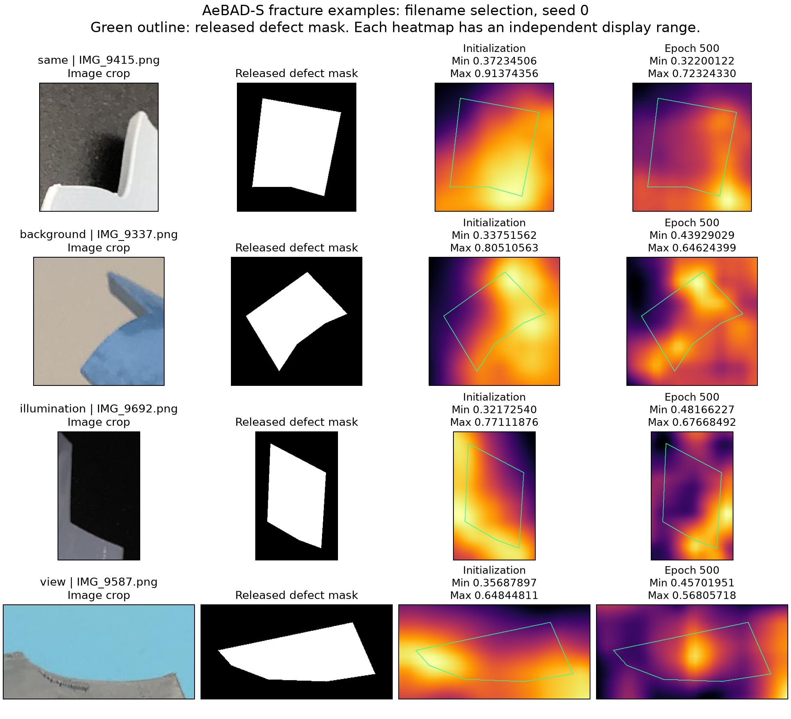
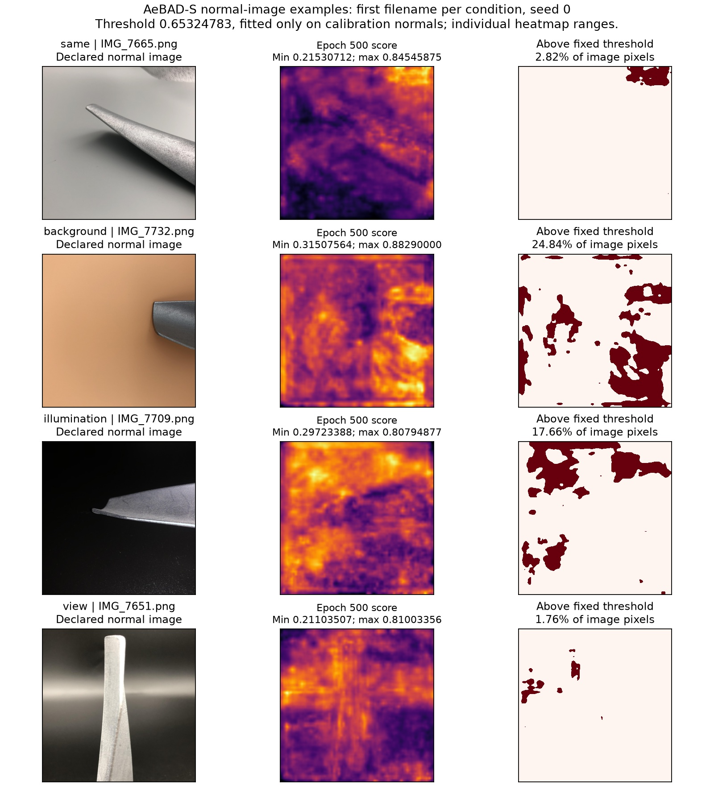
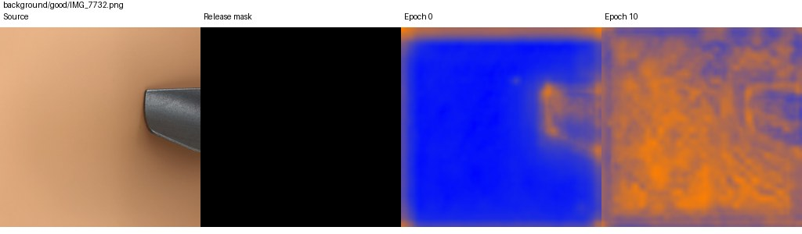

Examples from the AeBAD development sample. The reference masks come from the dataset; visual interpretations were prepared with AI assistance. Each heatmap has its own color range. Threshold masks and the FPR and region tables quantify the errors. AeBAD-S, Zhang et al. (2023), CC BY 4.0; derived visualizations.


